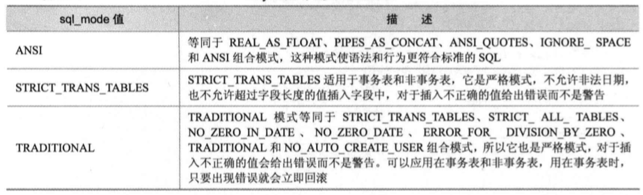
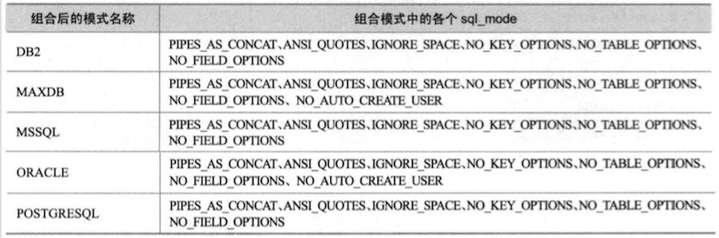

- Operate Database
- create, update and drop table
- index
- view
- Trigger
- Select
- insert, update and delete
- MySQL functions
- Store Procedure & Store Function
- Event
- User Management
- SQL Mode
- Backup & Recovery
- Log
- Performance
- MetaData的使用
- 参考文献
本文是对MySQL入门知识的总结，包括一些MySQL常见命令的示例
Operate Database
存储引擎
MySQL支持多种存储引擎
各种存储引擎各有特点，相对MyISAM和Memory，InnoDB支持事务，外键，表修复和并发控制，但磁盘和内存占用大，插入速度慢；Memory一般只用于临时表且表的大小受限
存储引擎的比较
| 特性 | InnoDB | MyISAM | MEMORY |
|---|---|---|---|
| 事务安全 | 支持 | 无 | 无 |
| 存储限制 | 64TB | 有 | 有 |
| 空间占用 | 高 | 低 | 低 |
| 内存占用 | 高 | 低 | 高 |
| 插入数据速度 | 低 | 高 | 高 |
| 支持外建 | 支持 | 无 | 无 |
SQL语句的分类
SQL是对数据库和数据进行操作的程序语言，SQL语句主要分为3类：
- DDL(Data Definition Language): 用于定义数据库，表，列，索引等数据库里的对象，语句里的主要关键字包括create，drop，alter等
- DML(Data Manipulation Language): 用于增删查改数据库里的数据，语句里的主要关键字包括select，insert，update，delete等
- DCL(Data Control Language): 用于控制数据库，表，字段等的访问权限和安全级别，语句里的主要关键字包括grant，revoke等
常用命令用例
-- start mysql server
mysqld_safe --user=root
-- shutdown the server
mysqladmin -u root shutdown
-- connect to mysql server
mysql -h localhost -uroot -p;
create database example;
show databases;
-- show current database
select database();
drop database example;
-- show all engines
show engines \G
--
快速的使用数据库客户端获取帮助
获取帮助的命令是 ?
按层次获取帮助
首先查看contents获得所有分类，然后查看子分类的帮助信息
mysql> ? contents
You asked for help about help category: "Contents"
For more information, type 'help <item>', where <item> is one of the following
categories:
Account Management
Administration
Compound Statements
Data Definition
Data Manipulation
Data Types
Functions
Functions and Modifiers for Use with GROUP BY
Geographic Features
Help Metadata
Language Structure
Plugins
Procedures
Storage Engines
Table Maintenance
Transactions
User-Defined Functions
Utility
mysql> ? Data Types
You asked for help about help category: "Data Types"
For more information, type 'help <item>', where <item> is one of the following
topics:
AUTO_INCREMENT
BIGINT
BINARY
BIT
BLOB
BLOB DATA TYPE
BOOLEAN
CHAR
CHAR BYTE
DATE
DATETIME
DEC
DECIMAL
DOUBLE
DOUBLE PRECISION
ENUM
FLOAT
INT
INTEGER
LONGBLOB
LONGTEXT
MEDIUMBLOB
MEDIUMINT
MEDIUMTEXT
SET DATA TYPE
SMALLINT
TEXT
TIME
TIMESTAMP
TINYBLOB
TINYINT
TINYTEXT
VARBINARY
VARCHAR
YEAR DATA TYPE
mysql> ? int
Name: 'INT'
Description:
INT[(M)] [UNSIGNED] [ZEROFILL]
A normal-size integer. The signed range is -2147483648 to 2147483647.
The unsigned range is 0 to 4294967295.
URL: http://dev.mysql.com/doc/refman/5.7/en/numeric-type-overview.html
快速查看命令的帮助
直接用 ？
mysql> ? show
Name: 'SHOW'
Description:
SHOW has many forms that provide information about databases, tables,
columns, or status information about the server. This section describes
those following:
SHOW {BINARY | MASTER} LOGS
SHOW BINLOG EVENTS [IN 'log_name'] [FROM pos] [LIMIT [offset,] row_count]
SHOW CHARACTER SET [like_or_where]
SHOW COLLATION [like_or_where]
SHOW [FULL] COLUMNS FROM tbl_name [FROM db_name] [like_or_where]
SHOW CREATE DATABASE db_name
SHOW CREATE EVENT event_name
SHOW CREATE FUNCTION func_name
SHOW CREATE PROCEDURE proc_name
SHOW CREATE TABLE tbl_name
SHOW CREATE TRIGGER trigger_name
SHOW CREATE VIEW view_name
SHOW DATABASES [like_or_where]
SHOW ENGINE engine_name {STATUS | MUTEX}
SHOW [STORAGE] ENGINES
SHOW ERRORS [LIMIT [offset,] row_count]
SHOW EVENTS
SHOW FUNCTION CODE func_name
SHOW FUNCTION STATUS [like_or_where]
SHOW GRANTS FOR user
SHOW INDEX FROM tbl_name [FROM db_name]
SHOW MASTER STATUS
SHOW OPEN TABLES [FROM db_name] [like_or_where]
SHOW PLUGINS
SHOW PROCEDURE CODE proc_name
SHOW PROCEDURE STATUS [like_or_where]
SHOW PRIVILEGES
SHOW [FULL] PROCESSLIST
SHOW PROFILE [types] [FOR QUERY n] [OFFSET n] [LIMIT n]
SHOW PROFILES
SHOW RELAYLOG EVENTS [IN 'log_name'] [FROM pos] [LIMIT [offset,] row_count]
SHOW SLAVE HOSTS
SHOW SLAVE STATUS [NONBLOCKING]
SHOW [GLOBAL | SESSION] STATUS [like_or_where]
SHOW TABLE STATUS [FROM db_name] [like_or_where]
SHOW [FULL] TABLES [FROM db_name] [like_or_where]
SHOW TRIGGERS [FROM db_name] [like_or_where]
SHOW [GLOBAL | SESSION] VARIABLES [like_or_where]
SHOW WARNINGS [LIMIT [offset,] row_count]
like_or_where:
LIKE 'pattern'
| WHERE expr
If the syntax for a given SHOW statement includes a LIKE 'pattern'
part, 'pattern' is a string that can contain the SQL % and _ wildcard
characters. The pattern is useful for restricting statement output to
matching values.
Several SHOW statements also accept a WHERE clause that provides more
flexibility in specifying which rows to display. See
http://dev.mysql.com/doc/refman/5.7/en/extended-show.html.
URL: http://dev.mysql.com/doc/refman/5.7/en/show.html
mysql> ? show create database
Name: 'SHOW CREATE DATABASE'
Description:
Syntax:
SHOW CREATE {DATABASE | SCHEMA} [IF NOT EXISTS] db_name
Shows the CREATE DATABASE statement that creates the named database. If
the SHOW statement includes an IF NOT EXISTS clause, the output too
includes such a clause. SHOW CREATE SCHEMA is a synonym for SHOW CREATE
DATABASE.
URL: http://dev.mysql.com/doc/refman/5.7/en/show-create-database.html
Examples:
mysql> SHOW CREATE DATABASE test\G
*************************** 1. row ***************************
Database: test
Create Database: CREATE DATABASE `test`
/*!40100 DEFAULT CHARACTER SET latin1 */
mysql> SHOW CREATE SCHEMA test\G
*************************** 1. row ***************************
Database: test
Create Database: CREATE DATABASE `test`
/*!40100 DEFAULT CHARACTER SET latin1 */
查看MySQL的官方文档
create, update and drop table
常用命令用例
创建表
create table student (
num int(10) primary key,
name varchar(20) not null,
sex varchar(4),
birthday datetime,
address varchar(50)
);
create table grade (
id int(10) primary key auto_increment,
course varchar(10) not null,
s_num int(10) not null,
grade varchar(4),
constraint s_sum foreign key(s_num) references student(num)
);
修改表结构
alter table grade modify course varchar(20);
alter table grade modify s_num int(10) after id;
desc grade;
alter table grade change grade score varchar(4);
alter table grade drop foreign key s_sum;
show create table grade \G
alter table grade engine=myisam;
alter table student drop address;
alter table student add phone int(10);
alter table grade rename gradeInfo;
alter table gradeInfo add constraint s_num foreign key(s_num) references student(num);
drop table student;
index
索引有两种实现类型：B树和哈希表，InnoDB和MyISAM支持B树，Memory支持哈希表(默认)和B树；
注意不同版本的MySQL中不同的存储引擎会对可用的索引数目，索引所占的总长度都有不同的要求
索引能提高条件查询，分组，排序和表连接查询的速度；但在插入数据时需要维护索引增加时长
索引类型：
- 普通索引
- 唯一性索引：性能比普通索引要高
- 全文索引：针对字符型的表属性
- 单列索引
- 多列索引
- 空间索引
注意不同版本的MySQL中不同的存储引擎可能不支持的某些索引
索引的使用原则：
- 尽量使用唯一索引
- 为经常需要排序，分组，连接或作为查询条件的属性建立索引
- 限制索引的数目
- 尽量使用属性的前段部分为索引而非全文索引
- 删除不再使用的索引
- 主键要选择较短的数据类型，因为其他普通索引保存的是主键的值
- 可利用多列索引的第一列作为单列索引查询
Hash索引和Btree索引不同，只适合对=，!=，in这些确定值的查询条件，不适合范围查询条件、排序等，也没有前缀索引，
Key和Index的不同
在关系模型中Key可以理解为一种约束关系，比如主键要求唯一确定一个记录，外键要求记录连接到其他记录；而索引是为了加速查询，并且帮助实现约束，比如唯一索引能帮助实现唯一约束；MySQL中Key同时也是索引
详情参考
常用命令用例
create database job;
-- 创建表时创建索引
CREATE TABLE user (
userid int(10) NOT NULL AUTO_INCREMENT,
username varchar(20) NOT NULL,
passwd varchar(20) NOT NULL,
info text,
PRIMARY KEY (userid),
unique index index_uid(userid desc),
index index_user(username, passwd),
fulltext index index_info(info)
);
CREATE TABLE information (
id int(10) NOT NULL AUTO_INCREMENT,
name varchar(20) NOT NULL,
sex varchar(4) NOT NULL,
birthday date DEFAULT NULL,
address varchar(50) DEFAULT NULL,
tel varchar(20) DEFAULT NULL,
pic blob,
PRIMARY KEY (id)
);
create index index_name on information(name(10));
create index index_bir on information(birthday, address);
-- 查看索引在查询中的使用情况
explain select * from information where birthday='' \G
alter table information add unique index index_id(id asc);
drop index index_user on user;
drop index index_name on information;
view
视图的作用：
- 简化操作
- 增加数据的安全性
- 提高表的逻辑独立性
不可更新的View类型
- 包含以下关键字的SQL语句：聚合函数(SUM等)，Distinct，group by，having，union，union all，join
- 常量视图
- from一个不可更新的视图
- where里的子查询引用了from里的表
- ALGORITHM为TEMPTABLE的view
常用命令用例
CREATE TABLE work_info (
id int(10) NOT NULL,
name varchar(20) NOT NULL,
sex varchar(4) NOT NULL,
age int(5) DEFAULT NULL,
address varchar(50) DEFAULT NULL,
tel varchar(20) DEFAULT NULL,
PRIMARY KEY (id)
);
insert into work_info values
(1, 'zhang san', M, 18, 'beijing haidian' , 1234567)
(2, 'li si' , M, 22, 'beijing changping', 2345678)
(3, 'wang wu' , F, 17, 'hunan yongzhou' , 3456789)
(4, 'zhao liu' , F, 25, 'liaoning buxin' , 4567890);
create algorithm=merge view info_view(id, name, sex, address)
as select id, name, sex, address from work_info where age > 20
with local check option;
-- ALGORITHM有三个值：MERGE、TEMPTABLE或UNDEFINCED，默认值是UNDEFINED
-- MERGE：将查询视图的语句与视图的定义语句合并处理
-- TEMPTABLE：视图查询的结果保存到临时表，而后在该临时表基础上执行查询视图的语句，对于视图的查询条件会在临时表上进行，包括传统的WHERE子句，以及像MERGE方式无法支持的DISTINCT、GROUP BY、HAVING等
-- UNDEFINED：由MySQL选择使用哪种算法，一般会首选MERGE，因为MERGE更有效率，而且TEMPTABLE不支持更新
-- with check option 是在通过view来更新表的时候进行约束，当更新表的结果能被视图查询出来则更新表的操作成功，否则失败
-- WITH LOCAL/cascade CHECK OPTION：当视图是根据另一个视图定义的时，LOCAL和CASCADED关键字决定了检查测试的范围。LOCAL关键字对CHECK OPTION进行了限制，使其仅作用在定义的视图上，CASCADED会对将进行评估的基表进行检查
select * from info_view;
create or replace algorithm=merge view info_view(id, name, sex, address)
as select id, name, sex, address from work_info where age < 20
with local check option;
update info_view set sex='M' where id=3;
drop view if exists info_view cascade;
show create view info_view \G;
Trigger
在表中对update，delete，insert操作进行监听并注册触发器，当监听的操作执行前或后触发触发器，有助于在数据库端保证数据的完整性
每个表的相同操作(insert等)、相同触发事件(before等)只能定义一个触发器
触发器中执行的操作有两个限制：
- 不能执行存储函数来获取返回数据，只能执行带out，inout类型参数的存储过程来获取返回值
- 不能使用显式或隐式的方式来开始或结束事务的语句，如start transaction、commit、rollback等
MySQL的触发器是按照 before触发器、行操作、after触发器 的顺序执行的，任何一个步骤错误都会导致不会继续执行剩下的操作。如果对事务表进行操作，则所有操作都会回滚；如果是非事务表则已经更新的操作不会被回滚
触发器中可以使用old，new来引用操作发生变化前后的那条记录
常用命令用例
CREATE TABLE product (
id int(10) primary key,
name varchar(20) not null,
functiono varchar(50),
company varchar(20) not null,
address varchar(50)
);
create table operate (
op_id int(10) primary key auto_increment,
op_type varchar(20) not null,
op_time time not null
);
CREATE TRIGGER product_bf_insert
BEFORE INSERT ON product FOR EACH ROW
insert into operate values(null, 'before insert', current_time());
create trigger product_af_update
after update on product for each row
insert into operate values(null, 'after update', current_time());
create trigger product_af_del
after delete on product for each row
insert into operate values(null, 'after delete', current_time());
delimiter @
create trigger product_bf_del
before delete on product for each row
begin
insert into operate values(null, 'before delete', current_time());
end@
delimiter ;
insert into product
values(1,'p1','f1','c1','a1');
update product set name='p2';
drop trigger product_bf_insert;
drop trigger product_af_update;
drop trigger product_af_del;
show triggers \G
select * from information_schema.triggers \G
Select
常用命令用例
create table student (
id int(10) primary key,
name varchar(20) not null,
sex varchar(4),
birth year,
department varchar(20) not null,
address varchar(50)
);
create table score (
id int(10) primary key auto_increment,
stu_id int(10) not null,
c_name varchar(10),
grade int(10)
);
insert into student values(901, 'zhanglaoda', 'male', 1985, 'computer science', 'beijing haidian');
insert into student values(902, 'zhanglaoer', 'male', 1986, 'chinese', 'beijing haidian');
insert into student values(903, 'zhangsan', 'f', 1990, 'chinese', 'hunan yongzhou');
insert into student values(904, 'lisi', 'male', 1990, 'english', 'liaoning buxin');
insert into student values(905, 'wangwu', 'f', 1991, 'english', 'fujian xiamen');
insert into student values(906, 'wangliu', 'male', 1988, 'computer science', 'hunan hengyang');
insert into score values(1, 901, 'computer', 98);
insert into score values(2, 901, 'english', 80);
insert into score values(3, 902, 'computer', 65);
insert into score values(4, 902, 'chinese', 88);
insert into score values(5, 903, 'chinese', 95);
insert into score values(6, 904, 'computer', 70);
insert into score values(7, 904, 'english', 92);
insert into score values(8, 905, 'english', 94);
insert into score values(9, 906, 'computer', 90);
insert into score values(10, 906, 'english', 85);
select * from student;
-- limit offset, rows 第一个记录的偏移(0开始)和行数
select * from student limit 1, 3;
select id, name, department from student;
select * from student where department in ('computer science', 'english');
select * from student where year(now()) - birth between 18 and 22;
select department, count(department) from student group by department;
-- with rollup会增加一个count(department)的统计
select department, count(department) from student group by department with rollup;
-- having会对聚合后的数据再筛选，而where是对聚合前的数据筛选
select department, count(department) from student group by department having count(department)>1;
select c_name, max(grade) from score group by c_name;
select c_name, grade from score left join student as stu on stu_id = stu.id where name = 'lisi';
select * from student left join score on student.id = score.stu_id;
select stu_id, sum(grade) from score group by stu_id;
select c_name, avg(grade) from score group by c_name;
select * from student where id in (select stu_id from score where c_name = 'computer' and grade < 95);
select * from student where id in (select stu_id from score where c_name = 'computer' and stu_id in (select stu_id from score where c_name = 'english'));
select grade from score where c_name='computer' order by grade desc;
-- union会去重，union all不去重
select id from student union select stu_id from score;
select distinct id from student;
-- like语法的通配符包括：%(匹配任意字符串), _(匹配任意字符), [], [^]
select name, department, c_name, grade from student as stu left join score as s on stu.id=s.stu_id where name regexp '^(zhang|wang)';
select name, year(now()) - birth as age, department, c_name, grade from student as stu left join score as s on stu.id=s.stu_id where address regexp '^hunan';
insert, update and delete
常用命令用例
create table food (
id int(10) primary key auto_increment,
name varchar(20) not null,
company varchar(30) not null,
price float,
produce_time year,
validity_time int(4),
address varchar(50)
);
insert into food
values(null, 'AA cookie', 'AA factory', 2.5, 2008, 3, 'beijing'),
(null, 'CC Milk', 'CC factory', 3.5, 2009, 1, 'hebei'),
(null, 'EE jelly', 'EE factory', 1.5, 2007, 2, 'beijing'),
(null, 'FF coffee', 'FF factory', 20, 2002, 5, 'tianjin'),
(null, 'GG sugar', 'GG factory', 14, 2003, 3, 'guangdong');
insert into food(name, company, price, produce_time, validity_time, address)
select name, company, price, produce_time, validity_time, address from food;
update food
set address='neimenggu', price=3.2
where company='CC factory';
delete from food where year(now()) - produce_time > validity_time;
-- 同时更新多个表
update emp a, dept b set a.sal=a.sal*b.deptno, b.deptname=a.ename where a.deptno=b.deptno
delete from food where address='beijing';
-- 同时删除多个表
delete a, b from emp a, dept b where a.deptno=b.deptno and a.deptno=3
MySQL functions
MySQL提供了很多函数来帮助开发SQL程序，非常强大，遇到复杂功能可以优先查找一下可用的函数，由于不同版本的MySQL的命令有所不同，所以此处示例里的命令可能会更新，请参考官方文档
常用字符串函数
| Name | Description |
|---|---|
| CONCAT(S1, S2,…Sn) | 合并字符串 |
| INSERT(str, x, y, instr) | 从x开始插入y个instr中的字符到str |
| LEFT(str, x) | 返回str左边x个字符 |
| LOWER(str) | 返回str小写格式 |
| LPAD(str, n, pad) | 在str左边插入pad中的字符，知道插入字符数达到n |
| LTRIM(str) | 删除str左边的空字符 |
| REPEAT(str, x) | 重复x次str |
| REPLACE(str, a, b) | 把str中的所有a替换为b |
| RIGHT(str, x) | 返回str右边x个字符 |
| RPAD(str, n, pad) | 在str右边插入pad中的字符，知道插入字符数达到n |
| RTRIM(str) | 删除str右边的空字符 |
| STRCMP(str1, str2) | 比较两字符串 |
| SUBSTR(str, x, y) | 获取从x开始y长度的子串 |
| TRIM(str) | 删除str左右两边的空字符 |
常用数值函数
| Name | Description |
|---|---|
| ABS(x) | 绝对值 |
| CEIL(x) | 返回大于x的最小整数 |
| FLOOR(x) | 返回小于x的最大整数 |
| MOD(x, y) | x % y |
| RAND() | 0到1间的随机数 |
| ROUND(x, y) | 保留x的y位小数，截断时四舍五入 |
| TRUNCATE(x, y) | 对x的小树进行截断，保留y位小数 |
例如：
-- 1-100随机整数
mysql> select round(rand()*100), floor(rand()*100), ceil(rand()*100);
+-------------------+-------------------+------------------+
| round(rand()*100) | floor(rand()*100) | ceil(rand()*100) |
+-------------------+-------------------+------------------+
| 66 | 39 | 98 |
+-------------------+-------------------+------------------+
1 row in set (0.00 sec)
-- 圆周率及其正余弦，对数
mysql> select pi(), sin(pi()), cos(pi()), log(pi());
+----------+------------------------+-----------+--------------------+
| pi() | sin(pi()) | cos(pi()) | log(pi()) |
+----------+------------------------+-----------+--------------------+
| 3.141593 | 1.2246467991473532e-16 | -1 | 1.1447298858494002 |
+----------+------------------------+-----------+--------------------+
1 row in set (0.00 sec)
常用日期函数
| Name | Description |
|---|---|
| CURDATE() | 当前日期 |
| CURTIME() | 当前时间 |
| DATE_ADD(date, INTERVAL expr type) | 给date加上一段type(年月日时分秒)的时间间隔expr |
| DATE_FORMAT(date, fmt) | 格式化date |
| DATEDIFF(date1, date2) | 求时间差 |
| FROM_UNIXTIME(expr) | 把一个unix时间戳转换为date |
| HOUR(time) | 获取时间里的小时 |
| MINUTE(time) | 获取时间里的分钟 |
| MONTH(date) | 获取日期里的月 |
| MONTHNAME(date) | 获取日期里的月份名 |
| NOW() | 获取当前日期和时间 |
| UNIX_TIMESTAMP(date) | 把一个date转换为unix时间戳 |
| WEEK(date) | 返回日期是一年中的第几周 |
| YEAR(date) | 获取日期里的年 |
DATE_FORMAT(date, fmt)中的fmt是一个格式化字符串，用的格式化参数请参考date format
DATE_ADD(date, INTERVAL expr type)中type是一种间隔类型(年月日时分秒)等，请参考date add
例如：
mysql> select month(now())
-> ;
+--------------+
| month(now()) |
+--------------+
| 5 |
+--------------+
mysql> select date_format(now(), '%M, %D, %Y');
+----------------------------------+
| date_format(now(), '%M, %D, %Y') |
+----------------------------------+
| May, 25th, 2017 |
+----------------------------------+
1 row in set (0.00 sec)
mysql> select now() current, date_add(now(), INTERVAL 31 day) after31days, date_add(now(), INTERVAL '1_2' year_month) after_oneyear_twomonth;
+---------------------+---------------------+------------------------+
| current | after31days | after_oneyear_twomonth |
+---------------------+---------------------+------------------------+
| 2017-05-25 13:59:19 | 2017-06-25 13:59:19 | 2018-07-25 13:59:19 |
+---------------------+---------------------+------------------------+
1 row in set (0.00 sec)
mysql> select now() current, date_add(now(), INTERVAL -31 day) before31days, date_add(now(), INTERVAL '-1_-2' year_month) before_oneyear_twomonth;
+---------------------+---------------------+-------------------------+
| current | before31days | before_oneyear_twomonth |
+---------------------+---------------------+-------------------------+
| 2017-05-25 14:00:29 | 2017-04-24 14:00:29 | 2016-03-25 14:00:29 |
+---------------------+---------------------+-------------------------+
1 row in set (0.00 sec)
控制流函数
| Name | Description |
|---|---|
| CASE value WHEN [value] THEN result [WHEN [compare_value] THEN result …] [ELSE result] END | 相当于switch value |
| CASE WHEN [condition] THEN result [WHEN [condition] THEN result …] [ELSE result] END | 相当于switch condition |
| IF(expr1,expr2,expr3) | 如果expr1为true则返回expr2，否则返回expr3 |
| IFNULL(expr1,expr2) | 如果expr1不为null则返回expr1，否则返回expr2 |
其他常用命令
| Name | Description |
|---|---|
| DATABASE() | 当前所操作的数据库 |
| VERSION() | MySQL的版本 |
| USER() | 当前连接的用户 |
| INET_ATON(IP) | IP地址转换为数字 |
| INET_NTOA(num) | 数字转换为IP地址 |
| PASSWORD(STR) | 对str的加密 |
| MD5(STR) | str的md5摘要 |
Store Procedure & Store Function
在数据库中存储一份经过编译的可执行SQL代码，直接调用就能得出结果，好处包括：
- 不同的客户端能使用一样功能的代码
- 为了保证安全性，保证有足够权限才能访问
劣势：过于复杂的逻辑和运算会影响MySQL的性能，复杂逻辑和运算应分散给应用服务器完成
存储过程和存储函数的不同是过程的可以没有返回值，函数必须有，存储过程参数有in，out，inout类型而函数只有in类型
常用命令用例
创建food表并插入数据
create table food (
id int(10) primary key auto_increment,
name varchar(20) not null,
company varchar(30) not null,
price float,
produce_time year,
validity_time int(4),
address varchar(50)
);
insert into food
values(null, 'AA cookie', 'AA factory', 2.5, 2008, 3, 'beijing'),
(null, 'CC Milk', 'CC factory', 3.5, 2009, 1, 'hebei'),
(null, 'EE jelly', 'EE factory', 1.5, 2007, 2, 'beijing'),
(null, 'FF coffee', 'FF factory', 20, 2002, 5, 'tianjin'),
(null, 'GG sugar', 'GG factory', 14, 2003, 3, 'guangdong');
创建存储过程
delimiter @@
-- be careful the ';' at each statement
-- 局部变量，光标，条件，处理器都是通过Declare声明的，它们必须出现在存储过程的头部，它们之间有先后顺序要求，变量和条件必须出现在前面，然后是光标，最后是处理器
create procedure food_price_count(in price_info1 float, in price_info2 float, out count int)
reads sql data
begin
# local variable must be declared first in block
declare temp float;
# cursor must be declared after local variable
declare match_price cursor for select price from food;
# handler must be declared after cursor
declare exit handler for not found close match_price;
# declare and set a user variable, user variable begin with @
set @sum=0;
# select into also can set variable
select count(*) into count from food where price>price_info1 and price<price_info2;
open match_price;
while count>0 do
fetch match_price into temp;
if temp>price_info1 and temp<price_info2 then set @sum=@sum+temp;
end if;
set count = count - 1;
end while;
close match_price;
select count(*) into count from food where price>price_info1 and price<price_info2;
end;
@@
delimiter ;
调用存储过程
call food_price_count(2,18,@count);
查看结果
select @count, @sum;
删除存储过程
drop procedure food_price_count;
查看存储过程
show create procedure food_price_count \G
show procedure status like 'food_price_count' \G
创建存储函数
delimiter @
create function food_price_count(price_info1 float, price_info2 float)
returns int
reads sql data
begin
return (select count(*) from food where price>price_info1 and price<price_info2);
end;
@
delimiter ;
调用存储函数
select food_price_count(2,18);
删除存储函数
drop function food_price_count;
查看存储函数
show create function food_price_count \G
Event
事件能定义在某个时间，周期性地触发的一系列操作；一般用于定期 收集统计信息、清理历史数据、数据库检查等
不适合用于繁忙且要求性能的服务器，过于复杂的逻辑操作
常用命令用例
create table test(
id1 varchar(10),
create_time datetime
);
-- insert record every 5s
create event test_event_1
on schedule
every 5 second
do
insert into test.test(id1, create_time) values('test', now());
show events \G
-- check whether enable event scheduler
show variables like '%scheduler%';
-- enable event scheduler
set global event_scheduler = 1;
-- show demaond process
show processlist \G;
-- clear test every 1 minute
create event trunc_test
on schedule
every 1 minute
do
truncate table test;
-- disable event
alter event test_event_1 disable;
drop event test_event_1;
User Management
user表包括用户列(Host, User, Password)，权限列，安全列，资源控制列；管理用户的登录和对所有表的权限，ssl，资源使用限制等；
db和host表包括用户列(host, user)，权限列;管理用户在数据库中的权限；
table_priv表包括用户列(host, user)，权限列；管理用户在表中的权限；
columns_priv表包括用户列(host, user)，权限列；管理用户在列中的权限；
pros_priv表用来管理用户对存储过程和函数的权限；
常用命令用例
登陆test数据库
mysql -h 59.83.17.100 -u root -p test
创建用户
create user 'test'@'localhost' identified by 'password';
删除用户
drop user 'test'@'localhost';
root修改自己密码
mysqladmin -u root -p password 'new_password'
root用户修改其他用户密码
set password for 'test'@'localhost'=PASSWORD('new_password');
普通用户修改自己密码
set password=PASSWORD('new_password');
授予查询，更新权限，该用户能给其他用户分与权限
grant select, update on *.* to 'test'@'localhost' with grant option;
回收权限
revoke select on *.* from 'test'@'localhost';
revoke all privileges, grant option from 'test'@'localhost';
查看权限
show grants for 'test'@'localhost';
SQL Mode
SQL Mode是MySQL的一个配置参数，通过改变SQL Mode能改变MySQL的一些行为；常见用法是通过设置Mode来增强或减弱数据插入时的校验严格程度，改变解析器对不同版本的SQL语法的支持，数据导入时对特殊字符处理的不同行为等
例如，在ANSI模式下插入错误的日期时产生了一个警告并插入了一个0值，而在更严格的TRADITIONAL模式下则会产生一个错误
mysql> set session sql_mode='ANSI';
Query OK, 0 rows affected (0.00 sec)
mysql> create table t(d datetime);
Query OK, 0 rows affected (0.02 sec)
mysql> insert into t values('2007-04-31');
Query OK, 1 row affected, 1 warning (0.00 sec)
mysql> select * from t;
+---------------------+
| d |
+---------------------+
| 0000-00-00 00:00:00 |
+---------------------+
1 row in set (0.00 sec)
mysql> set session sql_mode='TRADITIONAL';
Query OK, 0 rows affected, 1 warning (0.00 sec)
mysql> insert into t values('2007-04-31');
ERROR 1292 (22007): Incorrect datetime value: '2007-04-31' for column 'd' at row 1
常见而最重要的SQL MODE是一些原子MODE的结合，详细的原子MODE可以参考官方文档

还有一些在不同数据库之间迁移的时候用到的SQL MODE

Backup & Recovery
mysqldump命令的原理是根据数据库，表和数据生成一个备份文件，在文件中填入创建数据库，表和insert数据的命令
可以通过直接复制数据库目录的方式来备份MyISAM的表，但需要停掉MySQL服务
可以使用mysqlhotcopy工具来热备份MyISAM类型的表
select into outfile导出表数据到文本文件
SELECT [column name] FROM table [where ..] INTO OUTFILE ‘file’ [OPTION];
mysqldump也能导出数据，使用-X可以导出xml文件
mysqldump -uroot -pPassword -T dirname -X dbname table [option]
可以使用load data infile导入文本数据
LOAD DATA [LOCAL] INFILE file INTO TABLE table [OPTION];
常用命令用例
备份一个数据库中的表
mysqldump -uusername -p dbname table1 table2 > backup.sql
备份多个数据库
mysqldump -uusername -p --databases db1 db2 > backup.sql
备份所有数据库
mysqldump -uusername -p --all-databases > backup.sql
数据恢复
mysql -uroot -p < backup.sql
导出表中的数据，以”、”分隔，”>”开头，字符型数据用双引号括注
select * from test.student into outfile '/tmp/data' fields terminated by '\、' optionally enclosed by '\"' lines starting by '\>' terminated by '\r\n';
导入表的数据
load data infile '/tmp/file' into table student fields terminated by '\、' optionally enclosed by '\"' lines starting by '\>' terminated by '\r\n'
Log
MySQL有四种日志，除二进制日志外其他都是文本日志，默认只启动错误日志，因为日志会降低性能：
- 二进制日志：把数据库的操作信息(不包括查询)存储在二进制日志文件中
- 错误日志：记录MySQL的启动，关闭和运行错误信息
- 通用查询日志：记录用户登陆，操作和查询数据库的信息
- 慢查询日志：记录执行超过指定时间的操作信息
二进制日志最好单独存放于其他磁盘，可以用来恢复数据库
常用命令用例
在my.cnf或my.ini中启用二进制日志
[mysqld]
log-bin=/tmp/b_log
查看二进制日志
mysqlbinlog /tmp/b_log.000001;
删除所有二进制记录
reset master;
删除某一个二进制日志文件
purge master logs to '/tmp/b_log.000001'；
删除某个日期前创建的二进制日志
purge master logs to '2017-08-01 11:00:00'；
用二进制日志恢复数据库
mysqlbinlog b_log.000001 | mysql -uroot -p
暂停和恢复二进制日志
set sql_bin_log = 0
set sql_bin_log = 1
在my.cnf或my.ini中启用错误日志
[mysqld]
log-error=/tmp/err_log
重新创建错误日志文件，旧的日志文件被改名，可删掉或备份
mysqladmin -uroot -p flush-logs
在my.cnf或my.ini中启用通用查询日志
[mysqld]
log=/tmp/search_log
重新创建通用查询日志文件，旧的日志文件被删掉
mysqladmin -uroot -p flush-logs
在my.cnf或my.ini中启用慢查询日志
[mysqld]
log-slow-queries=/tmp/slow_queries_log
long_query_time=1
重新创建慢查询日志文件，旧的日志文件被删掉
mysqladmin -uroot -p flush-logs
Performance
索引经常用来优化条件查询，排序等；使用索引查询记录时，要注意索引的使用情况。like条件的字符串不能以通配符%开头，否则不会启用索引；使用多列索引时，查询条件的要用多列索引中的第一个字段才会启用索引；OR所连接的所有查询条件都要用索引的字段才会启用。
改变数据库的表结构，通过增加冗余来优化数据库的访问，这种方法适合查询远多于修改的情况：
- 在字段多的表中，把常用字段和不常用字段分成两个表
- 为经常需要进行连接查询的多个表创建一个中间表减少连接查询
- 为表增加冗余字段减少表连接
- 插入大量数据时可以先禁用索引和唯一性检查，完成以后再重新启用
常用命令用例
查看InnoDB表的查询记录数和更新记录数，慢查询数，连接数
show status like 'Innodb_rows_read' \G
show status like 'Innodb_rows_updated' \G
show status like 'Slow_queries' \G
show status like 'Connections' \G
分析查询语句的性能
explain select * from score where stu_id=96;
分析score表
analyze table score;
检查score表
check table score;
优化score表
optimize table score;
MetaData的使用
有些场景需要使用数据库的元数据来解决问题，数据库的元数据都在information_scheme数据库里，里面的表都是view，通过查询各个表能获取MySQL的各种元数据
例如
use information_schema;
-- gennerate commands of droping database test1's tables whose names contain 'tmp' prefix
select concat('drop table test1.', table_name, ';') from tables where table_schema='test1' and table_name like 'tmp%';
-- gennerate commands of changing all MyISAM table to InnoDB in the test1 database
select concat('alter table test1.', table_name, 'engine=innodb;') from tables where table_schema='test1' and engine='MyISAM';
常用的表有:
- SCHEMATA: 所有的数据库信息，相当于show databases的结果
- TABLES: 所有数据库里的表信息，相当于show tables from schemaname
- COLUMNS: 所有列信息，相当于show columns from scheme.table
- STATISTICS: 所有索引的信息相当于show index from scheme.table
参考文献
《MySQL入门很简单》
《深入浅出MySQL》
MySQL 5.7 Reference Manual